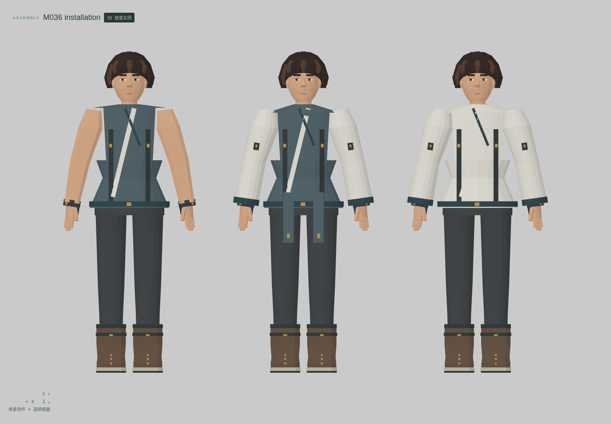
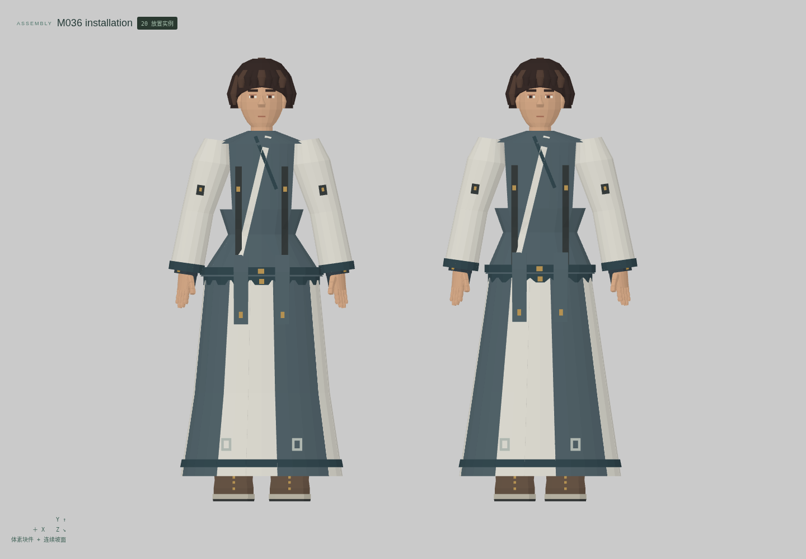
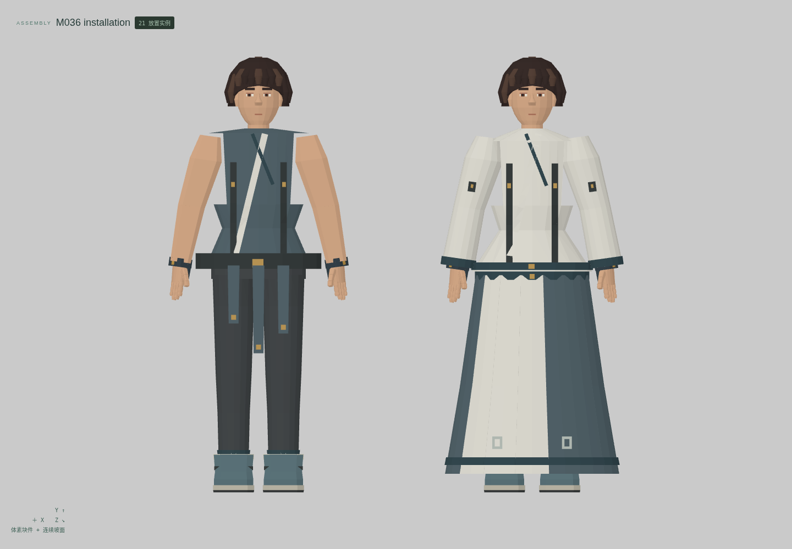
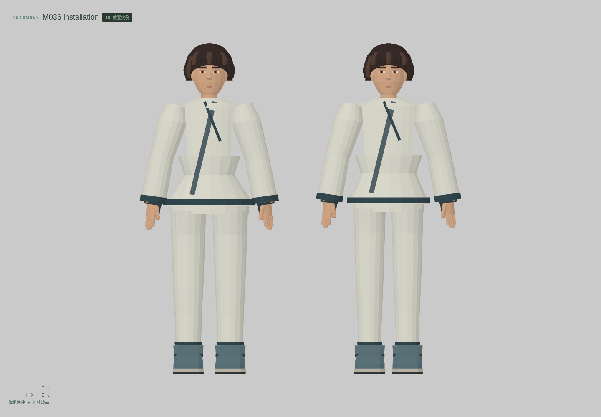
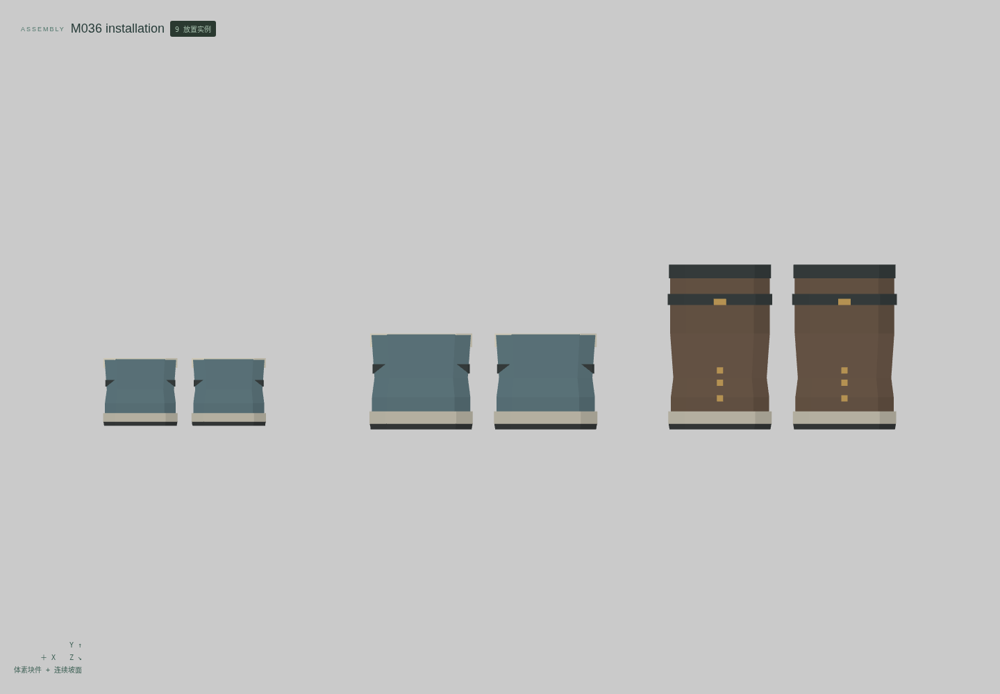
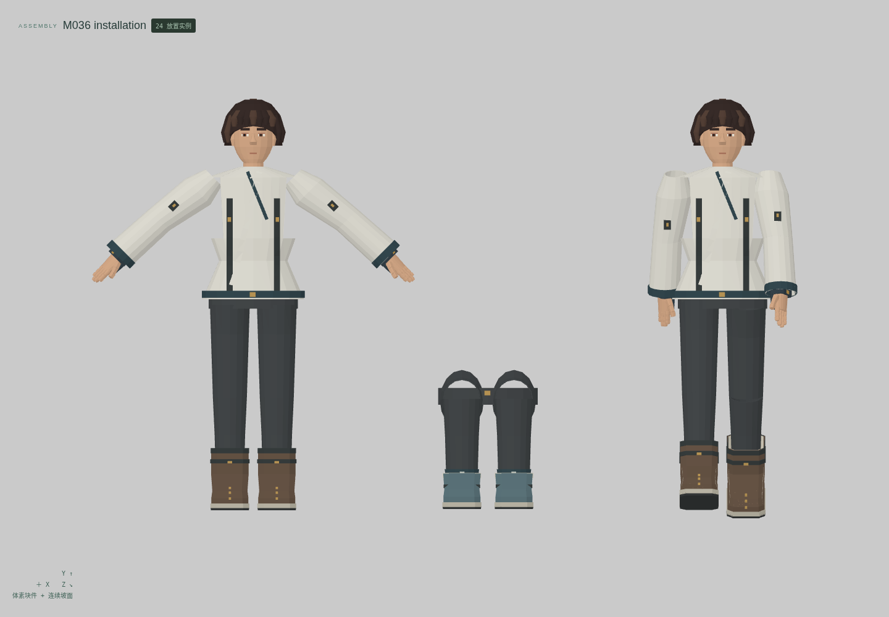
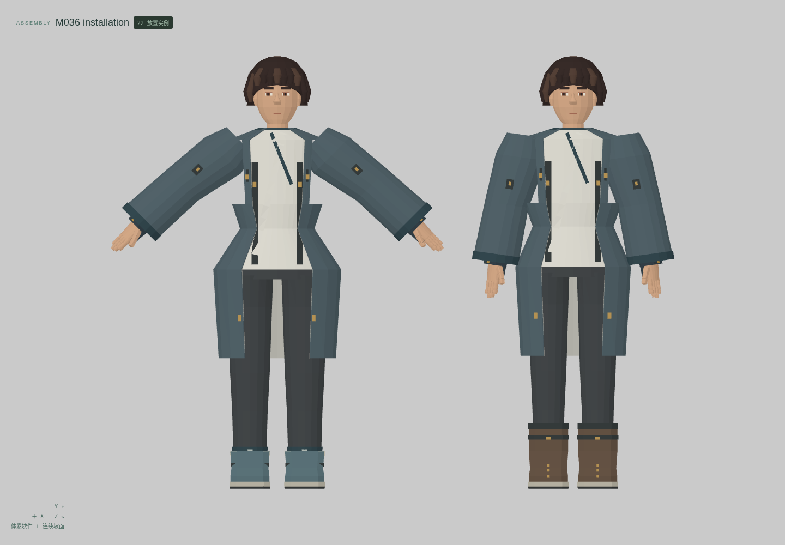

<!doctype html><meta charset="utf-8"><style>*{box-sizing:border-box}body{margin:0;background:#e2e4df;color:#263c34;font:20px system-ui}header,footer{padding:26px 34px}h1{margin:0 0 12px;font-size:32px}main{display:grid;grid-template-columns:1fr 1fr}figure{margin:0;border:1px solid #bec5bd;background:#eceeea}img{display:block;width:100%}figcaption{padding:14px 24px}figure:last-child{grid-column:1/3;margin:0 25%}</style><header><h1>云山 M036 · 衣装、裤裙与鞋履穿戴组合</h1>12 个独立母版 · 23 个形态 · 7 组真实编辑器装配 · 正面适配与材质视图<br>最小细节体素；衣面、斜领、褶片与鞋壳使用连续网格</header><main><figure><figcaption>短上衣 / 长袍上身 / 无袖马甲</figcaption></figure><figure><figcaption>长袍上身 + 独立细褶下摆</figcaption></figure><figure><figcaption>长裙 / 独立三垂带腰封</figcaption></figure><figure><figcaption>交领寝衣与寝裤 · 成人两比例</figcaption></figure><figure><figcaption>皮靴 / 布鞋 / 儿童鞋 · 配真实脚部</figcaption></figure><figure><figcaption>有限行走 / 坐姿下肢组件 / 抬臂</figcaption></figure><figure><figcaption>前开口长衫 · 替换隐藏内搭衣片</figcaption></figure></main><footer>头部及身体来自另存的既有母版，不重复计数。逐组件刚性关节；坐姿仅为下肢组件研究，完整坐姿上衣未通过。没有软布、动作片段或原游戏绑定。技术候选，人工美术验收 0。</footer>